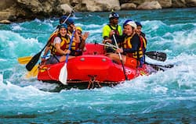
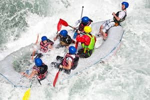
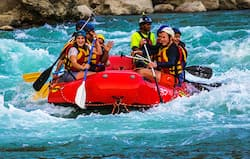
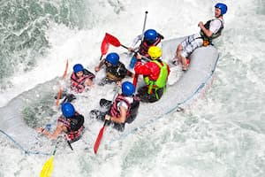

Trips
We have a variety of trips available for all skill levels. We have something for everyone, from beginners to experts. We have trips for all ages and skill levels.
Beginner Trip
Intermediate Trip

Advanced Trip

Click on Contact Us to book a rapid to ride
We have a variety of trips available for all skill levels. We have something for everyone, from beginners to experts. We have trips for all ages and skill levels.
Beginner Trip
Intermediate Trip
Advanced Trip
This trip is for beginners who have never been white water rafting before. This trip is a great way to get started and learn the basics of white water rafting.
This trip is for those who have some experience with white water rafting. This trip is a great way to improve your skills and learn new techniques.
This trip is for those who are experienced with white water rafting. This trip is a great way to test your skills and push your limits.